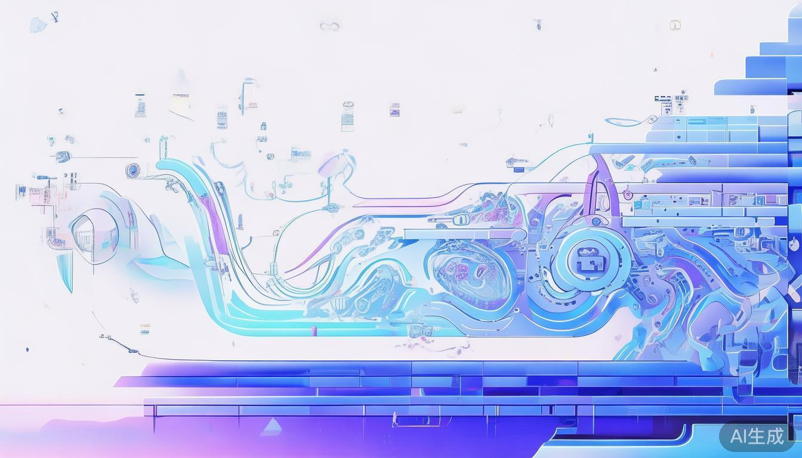

第 16 章 · AI与文化创意：从工具到伙伴
AI不只是效率工具，它正在成为创意伙伴。从写作到绘画，从音乐到影视，AI正在重新定义「创作」的边界。
AI写作
AI写作已经从「玩具」变成「工具」：
- 新闻写作：美联社用AI生成财报新闻，效率提升10倍
- 小说创作：AI辅助构思情节、生成初稿、润色文字
- 营销文案：AI批量生成不同风格的文案，A/B测试最优版本
- 剧本创作：AI分析经典剧本结构，辅助编剧创作
但AI写作的局限也很明显：缺乏真实的生命体验，情感表达流于表面。
AI绘画

AI绘画的进化速度惊人：
- Midjourney：艺术创作级别的图像生成
- Stable Diffusion：开源、可定制、本地部署
- DALL-E 3：文字理解最精准
应用：概念设计、插画、海报、游戏素材、影视概念图。
争议：版权归属、艺术家权益、原创性界定。
AI音乐
- Suno/Udio：文字生成完整歌曲，含歌词、旋律、编曲
- AI翻唱：克隆歌手声音演唱新歌
- AI作曲：辅助作曲家生成旋律、和声、配器
AI影视
- 剧本分析：AI分析剧本的商业潜力
- 虚拟演员：数字人、虚拟偶像
- 视频生成：Sora、Runway生成视频素材
- 后期制作：AI剪辑、调色、特效
创作的未来
AI时代的创作将呈现以下特征：
- 人机协作：AI处理技术性工作，人专注创意和情感
- 创作民主化：没有专业训练的人也能创作高质量内容
- 个性化内容：AI根据用户偏好生成定制化内容
- 新的艺术形式：AI原生艺术（AI-native art）将诞生
本章要点
- AI正在从「工具」进化为「创作伙伴」
- AI不会取代艺术家，但会用AI的艺术家会取代不会用的
- 版权、原创性、艺术家权益是AI创作需要解决的核心问题
- 未来的创作：人提供灵魂，AI提供技术
出处声明
本文由本站 AI 创作整理，内容基于公开知识/官方资料提炼，信息请以官方发布为准； 涉及的历史事件、产品与数据均可在公开渠道查证，本站不编造来源。引用外部内容遵循其原始许可，标注出处即可。